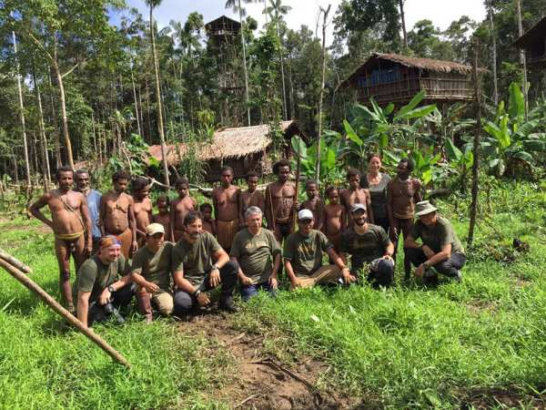
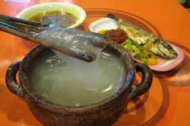
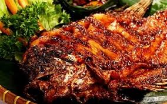

Papua Kita
Mengenal Suku Adat Papua
Suku Dani
Suku Dani adalah salah satu suku terbesar yang mendiami Lembah Baliem, Pegunungan Tengah Papua. Pakaian adat pria yang paling ikonik adalah **koteka**, penutup alat vital yang terbuat dari buah labu. Sementara itu, wanita mengenakan **rok rumbai** yang dibuat dari serat rumput atau ilalang.
Suku Asmat
Suku Asmat terkenal sebagai seniman ukir yang luar biasa, tinggal di wilayah pesisir selatan Papua. Pakaian adat mereka terbuat dari serat sagu atau kulit pohon, seringkali dihiasi dengan ukiran dan warna-warna alam. Ukiran dan patung Asmat sangat terkenal hingga mancanegara.

Suku Korowai
Dikenal dengan rumah pohonnya yang unik, Suku Korowai tinggal di daerah terpencil Papua. Pakaian mereka sangat sederhana, seringkali hanya menggunakan penutup tubuh dari daun atau serat pohon. Rumah pohon ini dibangun di atas pohon tinggi untuk menghindari serangan binatang buas dan serangga.
Kuliner Khas Papua

Papeda
Makanan pokok dari sagu yang memiliki tekstur lengket. Biasanya disajikan dengan ikan kuah kuning yang kaya rempah.

Ikan Bakar Manokwari
Ikan bakar dengan sambal khas yang pedas dan segar, cocok untuk para pecinta kuliner pedas.

Sagu Lempeng
Kue kering berbahan dasar sagu yang dimasak dengan cara dipanggang. Makanan ringan yang cocok sebagai camilan.